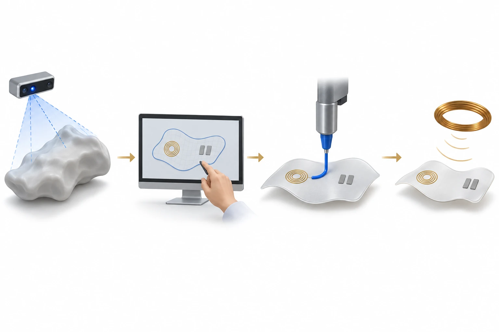

연구 배경과 분류
전극·수신 코일·연성 기판을 서로 다른 잉크로 결합하는 제작 공정이 핵심이다. 조직 접촉과 자극은 보조 연결이며 단순 센서 성능으로 분류한 것이 아니다.
연구 배경
상처의 크기와 곡률이 다르면 같은 평면 패치를 적용해도 전극과 코일의 배치가 적절하지 않을 수 있습니다. CARE는 상처 형상을 읽어 맞춤 전자소자를 만드는 제작 흐름에 초점을 둡니다. 형상을 인식하는 단계와 실제 자극이 전달되는 단계를 연결해야 맞춤 제작의 의미를 평가할 수 있습니다.
핵심 접근과 발전
깊이 영상을 이용한 형상 인식 뒤 전극·코일을 설계하고, 서로 다른 잉크를 순차적으로 로봇 인쇄하여 무선 자극 구조를 만듭니다. 각 단계는 앞 단계의 정보를 다음 단계의 제작 조건으로 옮깁니다. 다만 본문에서는 형상 정보를 MATLAB으로 수동 전달하므로 전체 과정이 완전 자동화되었다고 표시하지 않습니다.

AI 생성 비축척 개념도: 형상 관찰과 수동 설계를 거쳐 서로 다른 잉크를 순차 인쇄하는 CARE 제작 흐름을 설명합니다. 인쇄 장면은 활성 노즐 하나를 보여 주는 단일 시점이며 다른 잉크 단계는 생략했습니다. 기판 위 전극·수신 코일과 분리된 외부 여기 코일은 기능 기호로, 실제 회로도·실험 증거·임상 치료 결과가 아닙니다.
일반화한 팬텀·설계 화면·연성 기판으로 제작 역할만 설명합니다. 다른 잉크의 인쇄 단계와 상세 전기 배선을 생략했습니다. 실제 층 수·재료색·회로 연결·노즐 형상·코일 권수·정렬·전기장·전력 전달 성능·치유 효과·치수와 비율을 재현하지 않으며, 현미경 영상이나 제작 지침으로 사용하지 않습니다.
논문 원그림을 복제한 이미지가 아니며, 원그림 재사용 허가를 의미하지 않습니다.
공개 근거 범위의 개념으로 웹 ChatGPT에서 생성하고 독립적으로 개념 검토했습니다. 전체 논문 본문·보충자료 검증을 뜻하지 않습니다. 표시용 WebP 인코딩만 적용했으며 자르기·크기 변경·내용 편집은 하지 않았습니다.
평가 방법과 조건
무선 결합 시험은 코일 위치와 거리, 부하에 따른 전력 전달을 봅니다. 조직 전기장 모사와 세포의 증식·이동·혈관 관련 평가는 또 다른 검증 단계입니다. 계산된 장 분포를 생체에서 측정한 자극량으로, 세포 배양 결과를 동물의 상처 폐쇄로 바꾸어 읽지 않습니다.
주요 결과
무자극 대조군과 비교한 배양 시험에서 전기자극군은 섬유아세포·내피세포의 이동이 증가했고, 내피세포 관형성 시험의 연결점 수도 많았습니다. 이동·관형성 시험은 같은 20% duty cycle에서 노출 시간이 달랐으며, 증식 등 다른 판독에는 별도의 자극 조건을 사용했습니다. 이는 세포 수준의 반응이며 동물 상처 폐쇄나 환자별 최적 치료가 입증되었다는 뜻은 아닙니다.
한계와 남은 질문
형상 데이터 전달의 수동 단계와 외부 여기 코일·회로 구성은 실제 사용 흐름에서 남은 과제입니다. 움직임 중 결합 변화와 재현 가능한 자극량도 별도 검증이 필요합니다. 이 글의 효능 설명은 섬유아세포·내피세포 등의 확인한 평가 범위에 한정하며 임상 치료 효과를 주장하지 않습니다.
관련 외부 연구
Wireless, closed-loop, smart bandage with integrated sensors and stimulators for advanced wound care and accelerated healing
DOI: 10.1038/s41587-022-01528-3 ↗
Jiang 등의 밴드는 감지에 따라 자극을 제어하는 시스템과 동물 상처 평가를 다룬다. CARE는 맞춤 전극·코일의 제작 경로에 초점이 있다.
외부 연구는 공개 초록 확인이다. 동물 치유율을 CARE의 세포 이동 시험과 직접 순위화할 수 없다.
초록 확인교신저자 확인
서정목 교신 확인아래는 서정목의 교신저자 여부에 관한 확인 기록입니다. 저자 순서나 별표만으로 판정하지 않으며, 본문 내용 검증과 별도로 읽어야 합니다.
- 교신 고지 확인 출처 ↗
Corresponding Author — Jungmok Seo
Author information: all three Corresponding Author blocks; local PDF pp. 1–2 email match · public_publisher_author_information_read
- 교신 고지 확인 출처 ↗
J. Seo; E-mail: [redacted]
Published PDF page 1: linked author affiliation and E-mail; title and DOI · local_published_pdf_read
- 본문 확인 범위
- 출판사 초록과 제목·DOI가 일치한 출판 PDF pp. 10–12의 결과·Fig. 5–6·결론을 읽었습니다. 형상 데이터의 수동 MATLAB 전달, 무선 구동과 세포 평가를 구분해 재확인했으며 웹 전문 열람과 로컬 PDF 열람을 구분합니다.
- 보충자료 확인 범위
- 보충자료를 전수 검토하지 않았습니다. 본문에서 보충자료를 인용한 사실과 해당 보충자료를 직접 확인한 범위를 구분합니다.
- 남은 확인
- 학교 Chrome에서 보충 회로·코일 최적화 자료를 확인하고 수동 설계 단계가 후속 버전에서 자동화됐는지 별도 확인할 것.
COVERAGE & OUTREACH
보도와 소개
논문과의 연관성을 확인한 소개 자료입니다. 언론 게재는 독립 취재나 실험 결과의 추가 검증을 뜻하지 않습니다.
Large Scale Ultrafast Manufacturing of Wireless Soft Bioelectronics Enabled by Autonomous Robot Arm Printing Assisted by a Computer Vision‐Enabled Guidance System for Personalized Wound Healing ↗
공저자 게시물이 논문 전체 제목과 CARE의 컴퓨터 비전·로봇 팔 제작 개념을 직접 제시한다. 정규 논문 저자와 게시자 이름을 대조했다.
본문 확인 로그인 없이 공개된 게시물 본문과 논문 링크 카드를 읽었다. 날짜는 상대 표시 1y만 있어 확정하지 않았으며 댓글·좋아요 등의 동작은 하지 않았다.
근거와 확인 범위
출판사 초록과 제목·DOI가 일치한 출판 PDF pp. 10–12의 결과·Fig. 5–6·결론을 읽었습니다. 형상 데이터의 수동 MATLAB 전달, 무선 구동과 세포 평가를 구분해 재확인했으며 웹 전문 열람과 로컬 PDF 열람을 구분합니다.
추가 해설은 아래에 명시한 근거 범위에서 편집 검토를 승인한 내용입니다. 모든 본문·보충자료의 검증 완료를 뜻하지 않습니다.
- 추가 본문 확인 범위
- 출판사 초록과 제목·DOI가 일치한 출판 PDF pp. 10–12의 결과·Fig. 5–6·결론을 읽었습니다. 형상 데이터의 수동 MATLAB 전달, 무선 구동과 세포 평가를 구분해 재확인했으며 웹 전문 열람과 로컬 PDF 열람을 구분합니다.
- 추가 보충자료 확인 범위
- 보충자료를 전수 검토하지 않았습니다. 본문에서 보충자료를 인용한 사실과 해당 보충자료를 직접 확인한 범위를 구분합니다.
- 원본 공개 논문 목록 ↗ · #82 · 2026-10-03
- Crossref metadata ↗: Crossref에 등록된 공개 서지 메타데이터만 확인했습니다. 출판사 페이지·초록·본문을 읽었다는 뜻이 아니며, 학교 Chrome 전문 검증은 보류입니다. Crossref 대표 출판 연도는 2024이나, 온라인/인쇄 출판일 중 원본 연도 2025도 확인되어 실질 불일치로 분류하지 않았습니다. license_urls는 등록된 링크 목록이며 본문·그림 재배포 허가를 의미하지 않습니다. TDM 또는 게시 정책 링크가 포함될 수 있습니다.
- Large Scale Ultrafast Manufacturing of Wireless Soft Bioelectronics Enabled by Autonomous Robot Arm Printing Assisted by a Computer Vision-Enabled Guidance System for Personalized Wound Healing ↗
public_publisher_abstract · Abstract - Large Scale Ultrafast Manufacturing of Wireless Soft Bioelectronics Enabled by Autonomous Robot Arm Printing Assisted by a Computer Vision-Enabled Guidance System for Personalized Wound Healing ↗
local_pdf_read · BLS15_AdvHealthcareMater_2025_Robot_Printed_Bioelectronics_MAIN.pdf; pp. 10–12, Fig. 6 and Conclusion; title and DOI matched; PDF not redistributed - Large Scale Ultrafast Manufacturing of Wireless Soft Bioelectronics Enabled by Autonomous Robot Arm Printing Assisted by a Computer Vision‐Enabled Guidance System for Personalized Wound Healing ↗
local_published_pdf_selected_full_text_read · PDF pp. 10–11: integrated workflow and Conclusion - Large Scale Ultrafast Manufacturing of Wireless Soft Bioelectronics Enabled by Autonomous Robot Arm Printing Assisted by a Computer Vision‐Enabled Guidance System for Personalized Wound Healing ↗
local_published_pdf_selected_full_text_read · PDF pp. 10–11: design/printing workflow; manual MATLAB transfer limitation in Conclusion - Large Scale Ultrafast Manufacturing of Wireless Soft Bioelectronics Enabled by Autonomous Robot Arm Printing Assisted by a Computer Vision‐Enabled Guidance System for Personalized Wound Healing ↗
local_published_pdf_selected_full_text_read · PDF p. 10 and Fig. 5: wireless operation; p. 12 and Fig. 6: cellular evaluation - Large Scale Ultrafast Manufacturing of Wireless Soft Bioelectronics Enabled by Autonomous Robot Arm Printing Assisted by a Computer Vision‐Enabled Guidance System for Personalized Wound Healing ↗
local_published_pdf_selected_full_text_read · PDF p. 11: cellular-response Results; p. 12 Fig. 6D–G: migration and tube-formation controls, with assay-specific exposure/duty cycles - Large Scale Ultrafast Manufacturing of Wireless Soft Bioelectronics Enabled by Autonomous Robot Arm Printing Assisted by a Computer Vision‐Enabled Guidance System for Personalized Wound Healing ↗
local_published_pdf_selected_full_text_read · PDF p. 11: manual transfer and external hardware limitations; p. 12: cell-assessment scope - Large Scale Ultrafast Manufacturing of Wireless Soft Bioelectronics Enabled by Autonomous Robot Arm Printing Assisted by a Computer Vision‐Enabled Guidance System for Personalized Wound Healing ↗
independent_reviewer_selected_main_text · Local published-PDF text p.10–12, Figure 5–6 captions, §2.6, Conclusion portion on those pages - 추가 해설의 근거 ↗
연구 배경 · PDF pp. 10–11: integrated workflow and Conclusion · local_published_pdf_selected_full_text_read - 추가 해설의 근거 ↗
핵심 접근과 발전 · PDF pp. 10–11: design/printing workflow; manual MATLAB transfer limitation in Conclusion · local_published_pdf_selected_full_text_read - 추가 해설의 근거 ↗
평가 방법과 조건 · PDF p. 10 and Fig. 5: wireless operation; p. 12 and Fig. 6: cellular evaluation · local_published_pdf_selected_full_text_read - 추가 해설의 근거 ↗
주요 결과 · PDF p. 11: cellular-response Results; p. 12 Fig. 6D–G: migration and tube-formation controls, with assay-specific exposure/duty cycles · local_published_pdf_selected_full_text_read - 추가 해설의 근거 ↗
한계와 남은 질문 · PDF p. 11: manual transfer and external hardware limitations; p. 12: cell-assessment scope · local_published_pdf_selected_full_text_read - 추가 해설의 근거 ↗
관련 연구와의 연결 · PDF pp. 10–12; external abstract · local_published_pdf_selected_full_text_read - 추가 해설의 근거 ↗
관련 연구와의 연결 · Wireless, closed-loop, smart bandage with integrated sensors and stimulators for advanced wound care and accelerated healing; DOI 10.1038/s41587-022-01528-3; previously verified Abstract · public_external_abstract_read